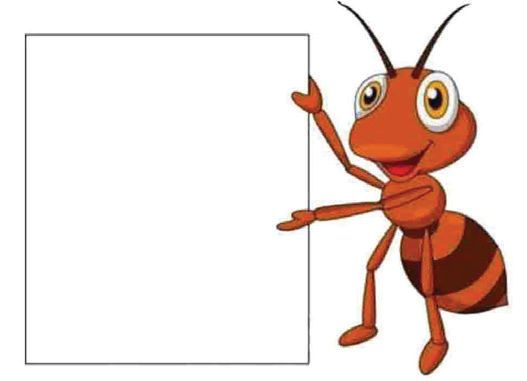
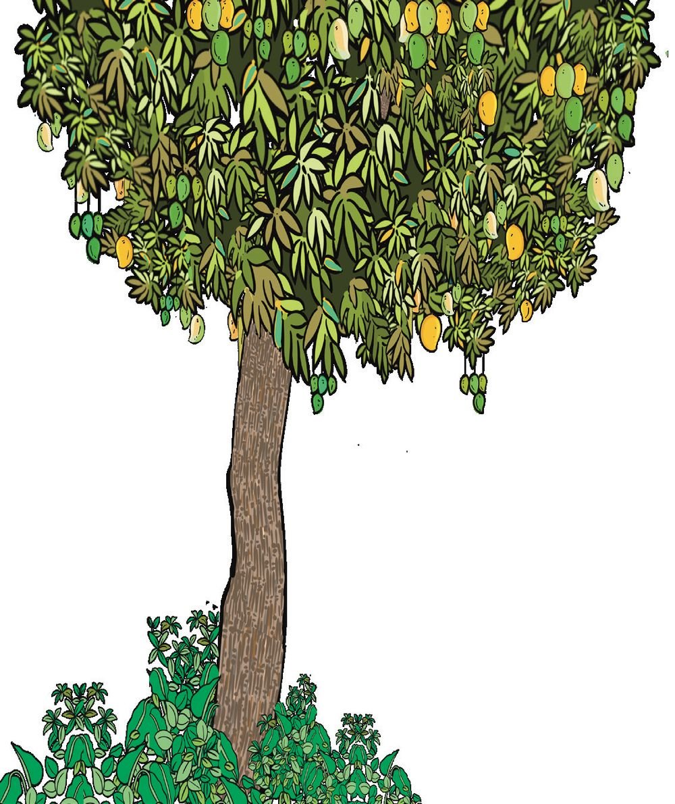
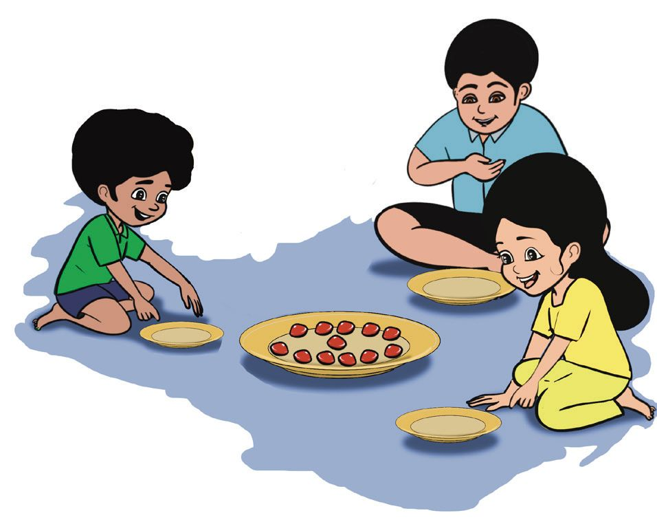
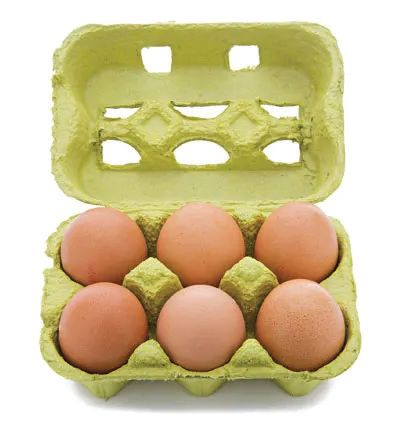
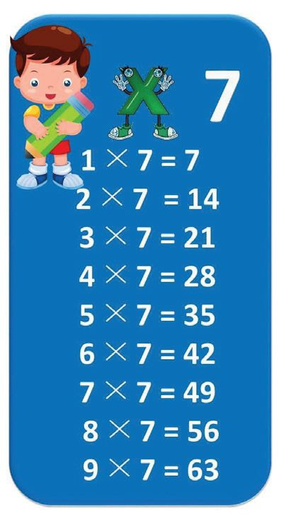
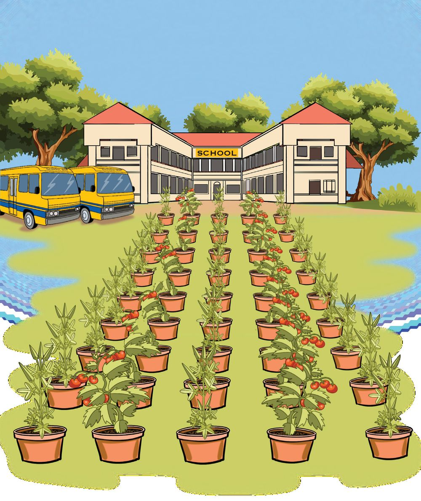

Let's Share
10 Let's Share
145


Let's Share
10 Let's Share
145



Mathematics Standard - III
Stand Together, Friends! Let's play the game "Standing Together"
20 children in Ajal's class played this game.
• When told, "Five together", how many groups were formed? 4 × 5 = 20 • How many groups were formed, when told, "Four together"? 5 × 4 = 20
• How many groups of two each? 10 × 2 = 20
146
4 groups of 5 is 20



Let's Share
• Which number gave the most number of groups? How many groups? 2 × 10 = 20
• When told, "Ten together"?
Total number of Number of children in a group children 20
5
20 20
2
Sweet Mangoes See the mango tree in the school ground. A lot of mangoes fell down when a strong wind blew. Ajal and friends picked them up. 16 ripe mangoes
•
28 raw mangoes
•
36 tender mangoes
4 5
20
•
Number of groups
Ajal's school has 4 classes
147

Mathematics Standard - III
They shared the ripe and unripe mangoes equally between the four classes. Divide the ripe manges into groups and colour them.
Divide the unripe mangoes into groups and colour them.
Class 1
Class 2
Class 1
Class 2
Class 3
Class 4
Class 3
Class 3
How many in this group?
How many in this group?
4 × 4 = 16
7 × 4 = 28
Ajal and his 5 friends shared the tender mangoes. Divide the tender mangoes into groups and colour them.
How many groups?
How many mangoes in each group?
148
....... × ...... = 36


Let's Share
Manchadi Game Ajal and friends are collecting manchadi seeds for their math boxes from under the manchadi tree in the school ground. Let's share equally!
I got 12
There are 12 seeds in the bowl. Abhinaya gave one seed to each. One seed each, remaining seeds 12 – 4 = 8 Two seeds each, remaining seeds 8 – 4 = 4 Three seeds each, remaining seeds 4 – 4 = 0
Total number of children
Three rounds of sharing, right?
How many did each get?
.......... × .......... = 12
Total number of seeds
If 12 manchadi seeds are divided equally among 4 children, each will get 3 manchadi seeds.
149



Mathematics Standard - III
What if 12 seeds are divided equally among 3 children? After one round, remaining seeds 12 - 3 = 9. After 2 rounds ........ After 3 rounds ........ After 4 rounds .......
Total number of seeds. Among how many children were they divided? How many did each get?
.......... × .......... = 12
What if 12 seeds are shared equally between 2 children? After one round, remaining seeds .................................................... After two rounds, the remaining seeds .................................................... After three rounds, ............................................................... .........................................
.............................................................................................................. ....................................................................................................................................................... ....................................................................................................................................................... Total number of seeds Divided between how many children? How many did each get?
.......... × .......... = 12
150


Let's Share
When 12 seeds were shared between 2 children, each got 6. If 12 is divided into 4 equal groups, each group has 3. If 12 is divided into 3 equal groups, how many would each group have? 12 seeds split into 2 equal groups
Each group has 6
12 split into 2 equal groups, 6 in each group. 12 split into 2 equal parts, 6 in each part. 12 divided into 2, each is 6. We also say 12 divided by 2 is 6. We write it using a symbol: 12 ÷ 2 = 6. 12 ÷ 2 = 6
We read this as "12 divided by 2 is equal to 6" 12 seeds are split into 3 equal groups.
4 in each group.
151

Mathematics Standard - III
If 12 seeds are divided into 3 equal groups, 4 each group would have 4. That is, 12 divided by 3 is equal to 4. 12 ÷ 3 = 4
4 × 3 = 12
If 12 seeds are divided into 4 equal groups, That is, 12 divided by 4 is equal to 3. 12 ÷ 4 = 3
3 × 4 = 12
12 seeds are divided into 6 equal groups. That is, 12 divided by 6 is equal to ........ ........ ÷ ........ = ........
.... × .... = 12
Let's write Event
Math operation
Math language
12 seeds shared equally between 2 children
12 is split into 2 equal parts
12 divided 12 ÷ 2 = 6 by 2
12 seeds shared equally between 4 children
12 ÷ 4 = 3
12 is split into 3 equal parts.
152


Let's Share
Complete the Table Event 6 sweets shared equally between 2 children
Math Operation
Math language
6 is split into 2 equal parts
6 divided by 2
6÷2=3
16 pencils shared equally among 4 children 18 pens shared equally among 6 children
Let's Make Flowers Ajal and friends are making flowers to decorate the stage for the 'Mikavu Fest'. 7 circles make a flower. They got 21 circles. How many flowers can they make?
• Abhinaya and friends got 35 circles.
How many flowers can they make? • How many flowers can be made with 28 circles?
153
.... × .... = 35




Mathematics Standard - III
Number of Flowers Number Group of circles
Number of Number of circles for Operations flowers a flower
1
21
7
2
35
7
3
28
7
4
70
7
5
14
7
21 ÷ 7 = 3
3
• Can you turn the operation 63 ÷ 7 = 9 into a question?
How Many Egg Trays? • There are two types of egg trays in the shop run by Ajal's father. One holds 4 eggs and the other, 6 eggs.
How many trays are needed for 24 eggs? 4 egg trays
6 egg trays
154

Let's Share
See the table 6 × 4 = 24
24 ÷ 4 = 6 24 ÷ 6 = 4
Can you complete these? ......................
56 ÷ 7 = 8 7 × 8 = 56
6 × 5 = 30
9 × 4 = 36 ......................
......................
......................
...................... 8 × 4 = 32
......................
18 ÷ 6 = 3
6 × 3 = 18
18 ÷ 3 = 6 8 × 3 = 24
24 ÷ 3 = 8
9 × 6 = 54
36 ÷ 9 = 4
155
......................


Mathematics Standard - III
Kitchen Garden
For the kitchen garden of the school, saplings were brought in 45 pots. They were arranged in five rows. How many pots are there in each row? One part of 45 split into 5 equal parts. 45 divided by 5 is equal to 45 ÷ 5 =
156
..... × ..... = 45

Let's Share
Train in the School Park In Ajal's school there are 32 children in the pre-primary class. The train in the school park has 4 coaches. If the same number of children are to be seated in every coach, how many can sit in each? ÷
=
Kiddie Cars The 18 children in Ajal's class want to ride the kiddie cars in the park. 3 children can sit in one car. How many cars are needed for all of them to ride at the same time? ÷
=
How many cars which seat only 2? ÷
=
Play and Win See the snakes and ladder board on the page 145.
• Start at 1 • Climb up the ladders and slide down the snakes. • Some squares have operations written on them. Move the counter to the squares showing the answer.
• The first to reach 100 is the winner.
157

Mathematics Standard - III
Assessment 1.
How many sweets? 15 sweets are equally shared by 3 children. How many does each get?
2.
Benches in the class There are 28 kids in Shiyan's class. 4 kids sit in each bench. How many benches are there?
3.
Notes and Coins A 50 rupee note is changed to 5 rupee coins. How many coins are there?
• 4.
If each is to get 10 rupees, among how many persons can this be shared?
Rows and columns 81 children stand in rows and columns with the same number standing in each row and column.
•
How many are there in a row?
•
How many are there in a column?
5.
Magic box
Anything put into the magic box doubles and then
increases by one, every minute. A sweet put in the box became 31 after 4 minutes. How many were there after 3 minutes?
158